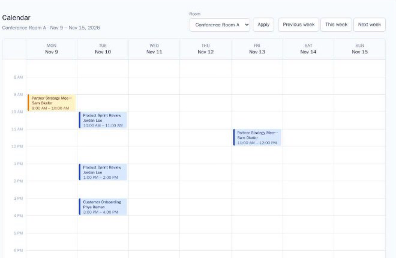
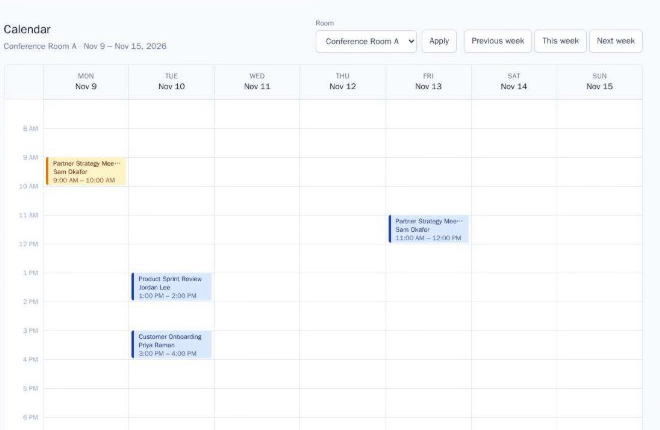
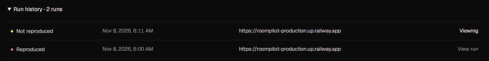

Reprobe
Reproduce the bug.
Verify the fix.
An agent that follows your bug report in a real browser, inside a disposable sandbox, and comes back with proof.

Check 1 · Reproduced
before the fix

Check 2 · Not reproduced
after
